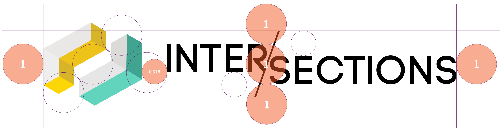
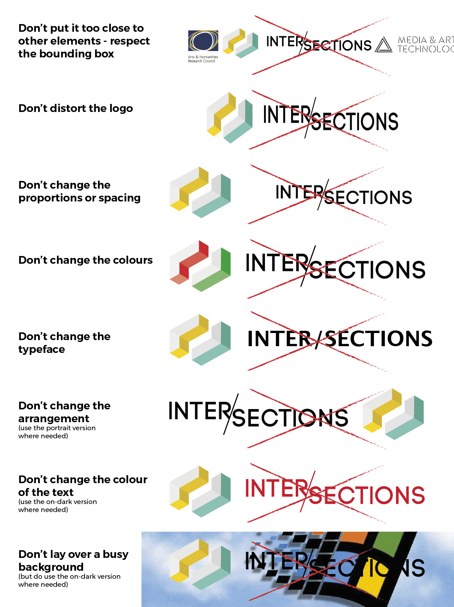

This is the Inter/sections design library.
Since 2016, Inter/sections has been a symposium organised by the PhD students in the Media and Arts Technology program at Queen Mary University of London.
The purpose of this pattern library is to provide a cohesive description of the design elements (colours, font choices, appearance, etc.) for Inter/sections, so future students have a base from which to build the brand for further iterations of this symposium.
Resources
The most up-to-date versions of all assets and templates are located on GitHub. If you're building something important, put it on this GitHub. If you're updating something, modify the relevant file on GitHub. Research versions and single-use assets should live in the Google Drive of the relevant edition, but any potentially re-usable component should be on the GitHub.
This document references the type of assets that exist on the GH repo (for example the logo, swatches, fonts) but you might find other things there.
Credits
Past Inter/sections design teams:
- 2017: Victor Loux, Daniel Gàbana, Soomi Park, Astrid Bin
- 2016: Daniel Gàbana, Soomi Park, Astrid Bin
For suggestions or to report problems, please open a GitHub issue. Please update the above lists yearly so that those after you know who to contact if they have questions!
Last updated: June 2017, by Astrid Bin & Victor Loux.
Name and language
Title
The name of this event is Inter/sections. Please note that the name should be spelled: Inter/sections.
Do not write it as Intersections, Inter/Sections, or INTER/SECTIONS (unless it is part of an all-caps sentence).
Consistently using the slash in the text form is important: we had to adopt this to differentiate ourselves from different events also called Intersections which popped up after the first edition, so it's not (just!) there as a stylisation trick to remind of the logo.
Logo
How to use
The correct versions of the logo are available in the assets repository. Note that the 2016 and the initial 2017 logos were differents (lighter) than the current versions; so if you find these versions, do not use them and pick the ones in the repo.
Most of the time, the horizontal (landscape) version should be used.
Where the logo needs to be laid over a dark background, an on-dark version of the logo also exists, with the text being white and very small optical corrections on the text paths to ensure contrast.
Minimum spacing should be applied as per the proportions below. One unit/circle = height from the top of INTER to the bottom of SECTIONS, need to be kept empty above and below the wordmark, and on each side of the logo:
“Boy does this sound complex!” I know buddy, this is why the logos in the repository are cropped perfectly. Normally you should get a bounding box around the logo which corresponds to these proportions: do not put anything else within that bounding box.
How not to use the logo
Text
Body text
Body text uses the font Montserrat by Julieta Ulanovsky.
We use three weights:
- Regular (this text)
- Semibold in rare occasions
- Bold to have emphasis.
Headings
Headings are set in Office Code Pro, by Nathan Rutsky. Headings are always in full caps.
The weight depends on the absolute importance of the heading (<h1> to <h3> = Bold; lower = Medium; do not use other weights). Headings also generally have a lower tracking (letter-spacing) but there is no strict rule on this (as this will depend on the optical size of your header; judge by eye based on existing applications on print and web).
Example of a headerExample of a small header
It's worth noting that the webfonts included in this pattern library and in the resources are an optimised subset of the normal font, they do not have the lowercase letters nor many special characters (to save on the filesize). If your titles ever look weird this might be why and you'll need to regenerate it on Fontsquirrel using Advanced options.
Anchor tags
Hyperlinks look like this one: standard underline, and in teal. If the text is teal on white then links should be a light shade of teal (@TODO).
Colour
Using colours
The colour scheme for Inter/sections was developed in 2016, and consists of two colour families: base colours, and accent colours. Base colours (from the logo) should ideally remain the same every year, whereas accent colours can vary between editions.
To use colours, refer to the tables below. On the web, always import the SCSS file that can be found in the assets repository: variables are named with a prefix (row) to indicate hue, and the suffix (column) to indicate the saturation. For example to get a full teal (first cell) you would call $teal-base.
On print, import the ASE (Swatch Exchange) file that is also available in the repository. InDesign, Illustrator and Photoshop support this: click the little arrow in the Swatches palette, and choose Load Swatch. This will avoid lengthy and error-prone copying and pasting: all the colours will be there!
{kind=link}
Do not apply a tint, or lowered opacity, on a full colour. Use the colour variations available in the swatches below instead.
Base colours
-base |
-main |
-01 |
-02 |
-03 |
|
$teal- |
|||||
$gold- |
|||||
$grey- |
Accent colours
-base |
-main |
-01 |
-02 |
-03 |
|
$blue- |
|||||
$ruby- |
|||||
$coal- |
|||||
DIY |
H: any |
H: any |
H: any |
H: any |
H: any |
A note on text over colours
In general aim for the highest contrast possible: always use a full colour (-base or -main on top of white, or a -02 or -03 shade; or the inverse). When in doubt check if the contrast ratio is greater than 4.5:1, or 3:1 for large headings.
When making text over a lighter colour, do not make the text grey - either use pure black or a full (-base) colour, and adjust the alpha value.
For example, the box on the left uses
colour: rgba(0,0,0,0.5)
,while the one on the right uses the equivalent hex code for middle grey,
colour: #7d7d7d
.There's definitely a difference in readability, particularly with higher resolution screens.
Readable
Less readable
Data
Tables
Tables are used only to contain tabular data.
| Name of data | Value 1 | Value 2 | Value 3 | Value 4 |
| Thing | 5.67 | 6.98 | 4.25 | 2.64 |
| Other thing | 4.74 | 9.45 | 0.25 | 1.46 |
| Another thing | 5.46 | 1.75 | 1.68 | 4.26 |
| Last thing | 4.89 | 2.68 | 1.69 | 8.28 |
Unordered lists
- Thing one
Things! - Thing two
- Thing three
Ordered lists
In order for ordered lists to be displayed correctly, the content inside the li tag are wrapped in span elements. You're right, it should be easier and fixed in CSS2, but here we are in CSS3, stylin the web like it's 1999.
- Thing one
- Thing two
- Thing three